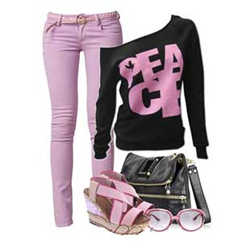
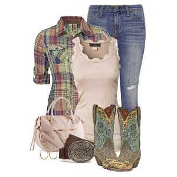
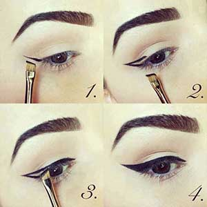
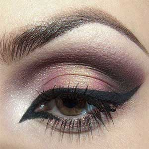
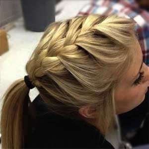
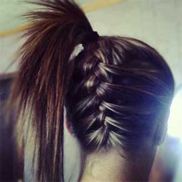
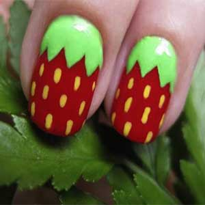
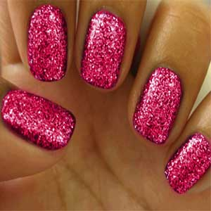

Qué usar hoy
 El rosa se vino con todo, En accesorios o en tus prendas siempre nos da un toque más femenino. Probalo en
diferentes tonos y elegí el que más pegue con vos que seguro no fallar.
Make up
 Delineado cat-eye. Seguí este paso a paso y anímate a una mirada bien felina.
Hair style
 La trenza cocida es el look trendy de esta temporada. Para ponerle más onda al pelo recogido intenta hacerla en diferentes posiciones.
Nail art
 Los colores plenos con glitter dan un toque casual chic.Para las más osadas las uñas dibujadas es la opción para
dejar lucir su creatividad.